Small electronics projects
In my teens I worked on various electronics projects, with the support of volunteers at technical youth centres in my city, De Jonge Onderzoekers and SCN. A lot of it is lost, but I’ve tried to gather pictures, schematics, and code, from old backups.
Various standard projects
We had a bunch of projects for kids to get started. I’ve made some of these as a kid myself, and I later compiled them into a PDF. I’ve probably helped make several dozen of these.
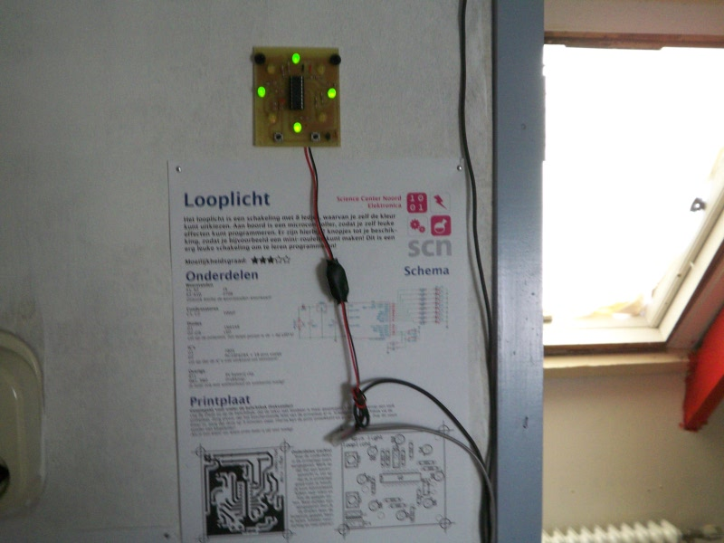
Mobile Phone Sniffer
This is a project from the May 2002 Elektor. It allowed you to hear where there are mobile phones in use, using headphones.
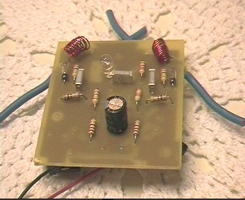
Mailbox Counter
This device was hooked up to my parents’ mailbox, using two wires that would touch each other in rest, but become disconnected when mail was thrown in. On the print board it had a nine-segment display that would show the number of times mail was thrown in, and a button to reset the counter. It was completely taped in and put inside plastic so it would survive rain.
It worked for a few days until people started telling my parents they saw a bomb on our mailbox, and I had to take it down.
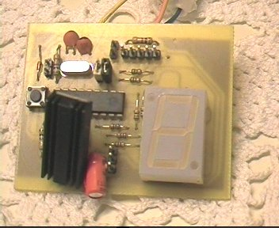
Rotating ticker
I based this project off the design that a friend made. The idea is to have 8 LEDs quickly spin through the air, and then blink them in a particular pattern, so you see words appear in the air. I built a robust base from wood, and a circuit board that rotates on top of it, with another circuit board with the LEDs mounted at an right angle onto it. The full-colour two-sided bike wheel version of this was a natural next step.
This animated GIF is the only picture I have left of it. The thing has mysteriously disappeared.
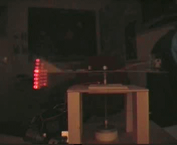
PIC Programmer
The microcontroller I used most often was the PIC. I built a test board, programmer, and serial port interface for it.
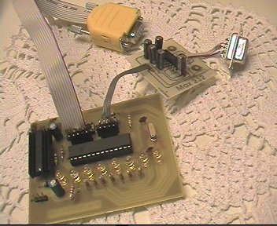
The inside of the programmer:
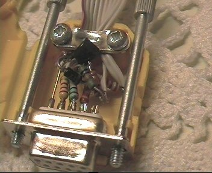
A bunch of my gear (photo from 2009)
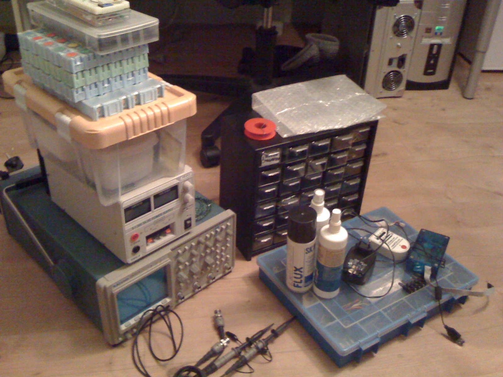
Other projects
Here’s some oscilloscope games that we made, based on this design:
I also helped some other folks build stuff, like aquarium lights and an alarm clock that would play old game tunes:
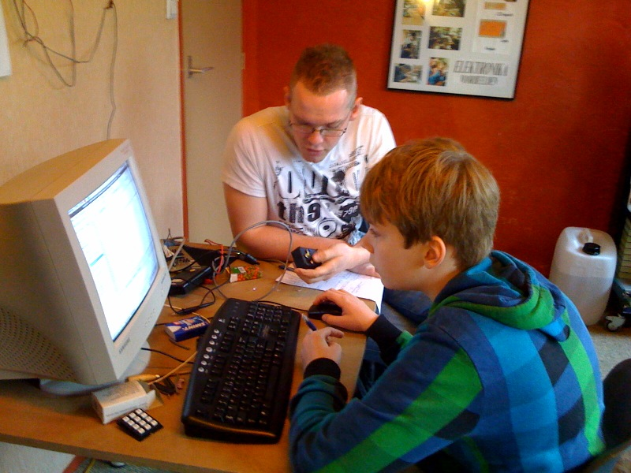
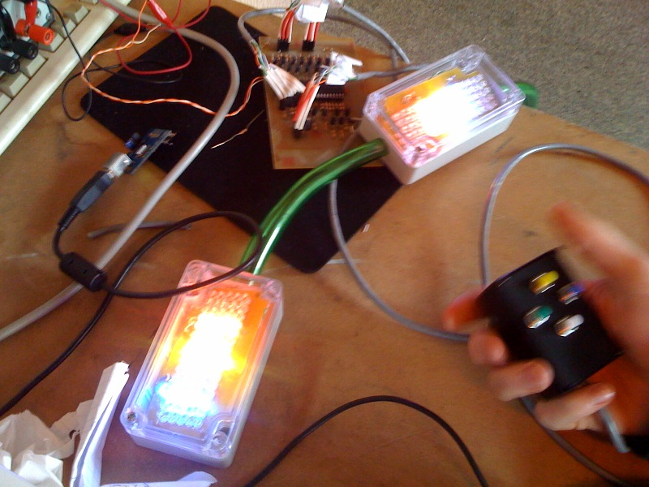
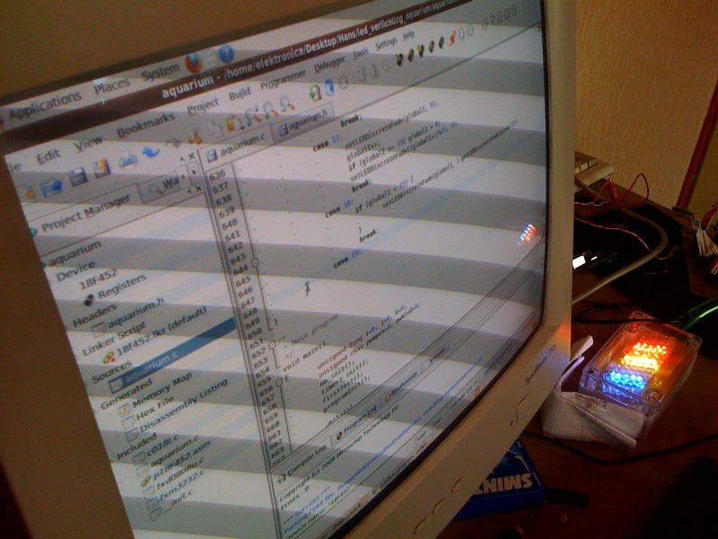
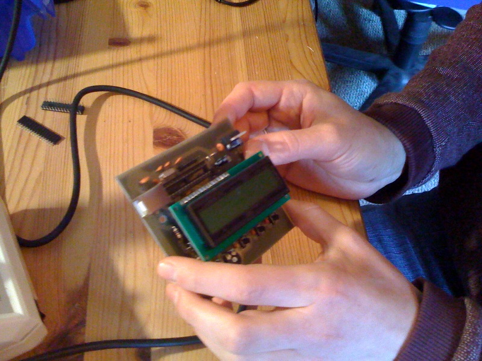
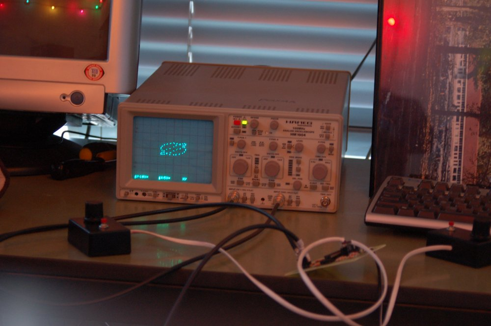